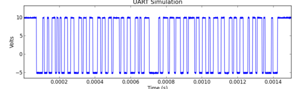
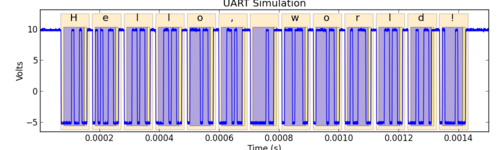

Ripyl library documentation¶
Ripyl is a library for decoding serialized data collected from an oscilloscope or logic analyzer. It supports a variety of protocols and can be readily extended with new protocols. Ripyl is useful for offline decoding of data collected on instruments with no built in support for decoding or lacking support for more advanced protocols.
It can process a waveform like this:
... and produce an annotated result like this:
Using Ripyl is as simple as follows:
import ripyl
import ripyl.protocol.uart as uart
raw_samples, sample_period = read_samples_from_your_oscilloscope()
txd = ripyl.streaming.samples_to_sample_stream(raw_samples, sample_period)
records = list(uart.uart_decode(txd, bits=8, parity='even', stop_bits=1))
The library provides decoded information in an easily traversed tree detailing the time and data for each sub-element of a protocol transmission. In the example above you can see the individual frames along with the highlighted data and parity bits within each frame. The status of parity is verified as are checksums and CRCs used in other protocols.
Getting started¶
If you are new to Ripyl you can get started by reviewing the introductory guide and following the beginner’s tutorial.